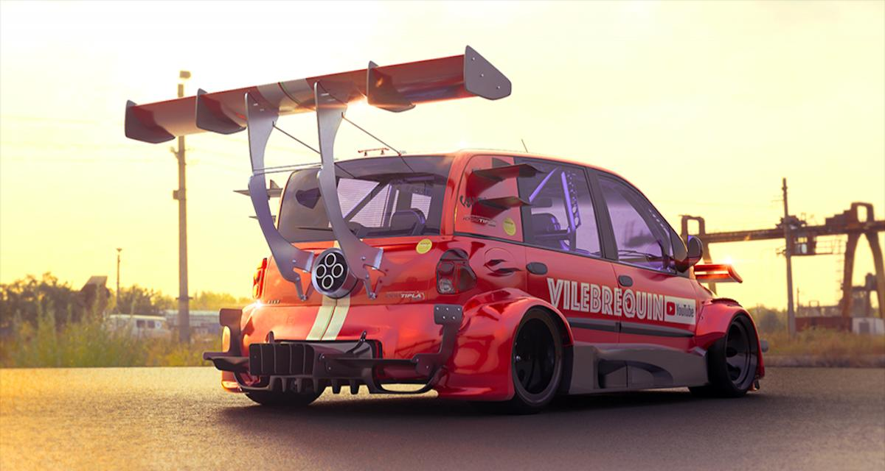
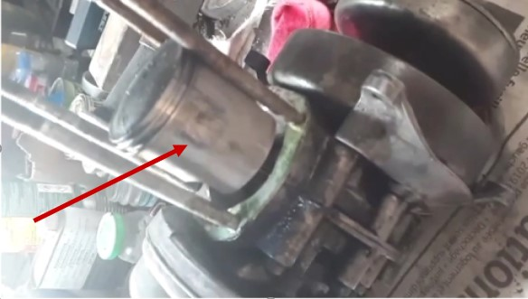
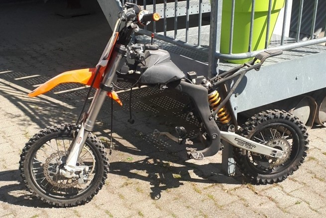
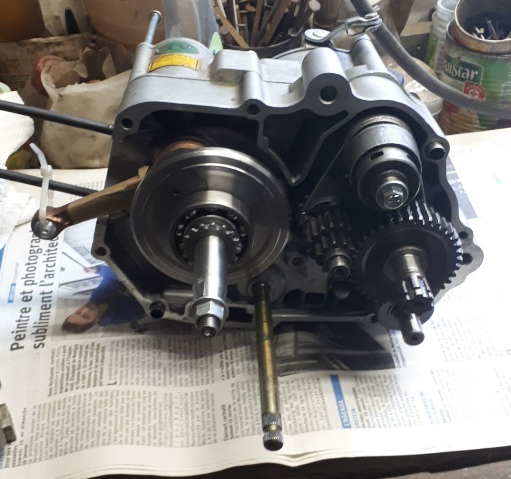
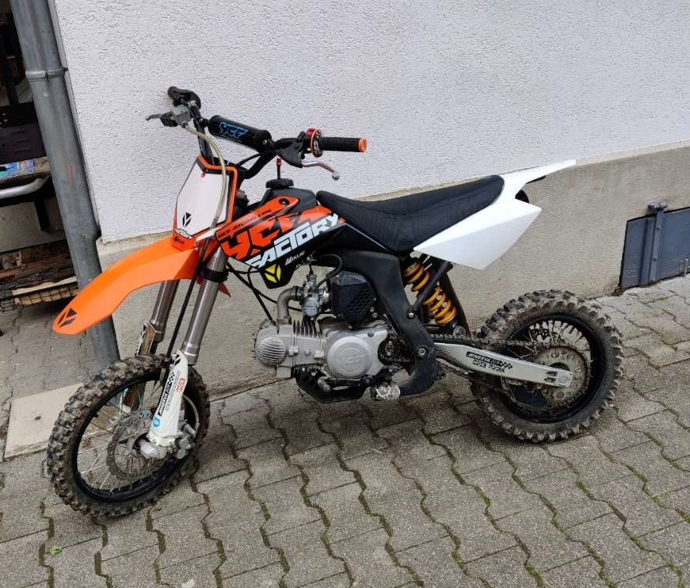

J'ai plein de choses que me passions dans la vie, comme le sport, l'harware et encore une multitude de chose, mais alors ma première passion, c'est la mécanique. Vous allez me dire, mais tu fais quoi en RT, je vous réponds le souci quand on a plusieurs passions, il faut bien en choisir une et j'ai choisi l'informatique, c'est que je vais vous faire partager à travers cette page web.
Pourquoi j'aime ça
Je pense, j’aime ça comme pas mal de garçon, quand j’étais enfant, j’étais attiré par les belles voitures, les belles motos, je ne sais toujours pas pourquoi, mais j’étais époustouflé quand une voiture de sport passé devant moi, j’étais charmé autant par leurs beautés et pars leur bruit.
Donc comme cette chose me passionne, je me suis de plus en intéresser, renseigner sur le domaine de la "voiture" et autrement dit la "mécanique automobile".

les projets que j'ai déja fait
Peugeot 103
Ce que vous voyez juste en dessous, c'est un moteur de Peugeot 103. Pour les plus âgés, c'étais peut-être votre mobylette et pour les plus jeunes la mobylette de votre grand-parent, ou tout simplement un gros vélo que vous avez déjà dans une grange. Pour vous reconstestualiser j'ai donc acheté une 103 qui n'était pas en état de marche pour la réparer et la renvendre par la suite.C'est un moteur basé sur l'architecture de 2temps. La zone pointée par la flèche rouge est unetrace de frottement anormal du piston contre le cylindre, causé par une surchauffe du moteur qui a engendré une mauvaise lubrification de la chambre de combustion ce qui a provoqué la casse moteur. (serrage du moteur) J'ai donc effecturé la restauration de ce moteur en changé tout les internes , piston ; vilbrequin tout les joints etc . j'ai fait pour mon plaisir j'ai adoré faire ça et aussi pour me faire un peux d'argent. Malheuresemnt je n'ai perdu les autres photos du projet .

Dirt ycf
Ce que vous voyez juste en dessous, n'est pas une 103, mais une dirt. C'était a peux prêt le même cas de figure, une moto avec le moteur serrer, mais vu que c'est une moto, je ne sais pas si le moteur était bloqué à cause d'un serrage moteur comme sur la 103 ou un problème de boîte de vitesse. L'architecture moteur n'est pas du tout pareille que sur la 103 car on passe d'un moteur 2temps a un 4temps donc premier gros changement, mais aussi a un système de poulit/variateur a un système de moto avec une boite de vitesse.
Donc il y a eu lieu d'un démontage complet du moteur et de la boite. J'ai donc pu constater que la boite de vitesse a une usure normale et que le moteur est toujours bloqué même étant désolidariser du moteur. J'étais donc certains que le souci venait du moteur. 
Ceci est l'intérieur du moteur de la dirt ,le moteur était déjà en cour de remontage.
La première étape était le changement de vilebrequin comme vous pouvez le constater il est neuf. Car après démontage intégral du moteur , je me suis rendu compte que c'est le vilebrequin qui a rendu l'âme. J'ai donc effectuer un changement de vilebrequin, piston, cylindre qui était pas mal usé et étant donné que le moteur est déjà ouvert autant repartir sur du neuf pour avoir un moteur sain. Après le remontage fini, j'ai demandé un ami de s'occuper du réglage des soupapes, car je n'avais pas les outils pour le faire.
Vous voyez donc la moto fini, le moteur dans le châssis et surtout fonctionnel. Avant de partir rouler, j'ai bien évidemment fait le plein de tous les liquides donc huile moteur et de boite, liquide de refroidissement. Après une séance de sport (démarrage au kick) ce qui est toujours très dur avec un moteur tout neuf car la compression du moteur est très élevé. Quand elle a enfin démarré, il a fallu régler le ralentie et la richesse du moteur (un réglage carburateur). Après tout ça je l'ais laisser une bonne heures au ralenti pour que l'huile se propage bien partout et j'ai effectué une vidange, car lors du démontage, j'ai vu qu'il y avait énormément de résidu de métal dans l'huile. Après ça la vidange faite, j'ai enfin pu l'essayer et la vendre. 